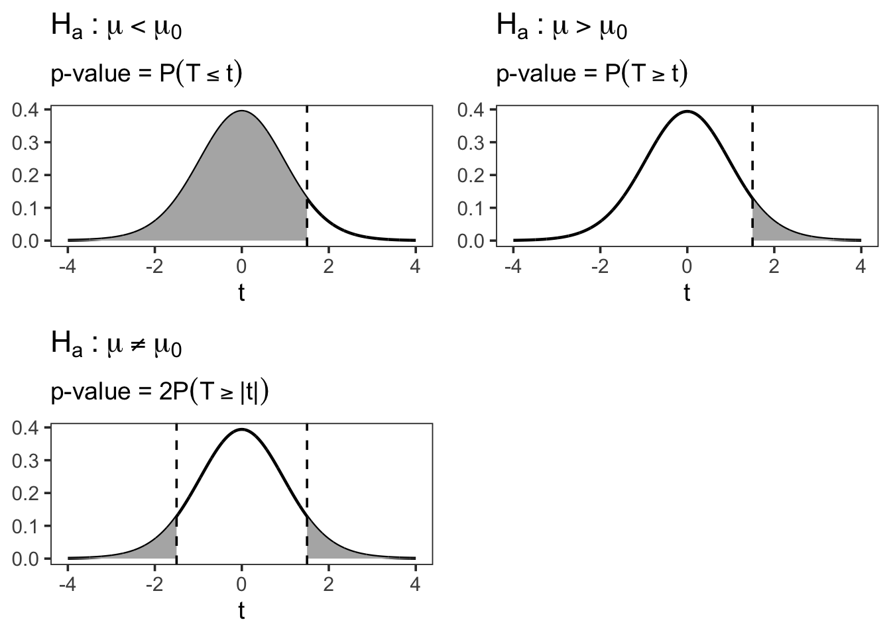

7 One Sample Nonparametric Test
Learning Objectives
- Be familiar with the difference about parameter tests and nonparameteric tests
- Applied the one sample non-parametricc test to do inference for one sample mean problem
7.1 Motivation
A parametric test specifies certain assumptions about the distribution of responses in the population from which the sample is drawn. The validity and interpretability of parametric test results depend critically on whether these assumptions are satisfied.
In contrast, a nonparametric test is based on a model that imposes only very general conditions and does not assume a specific parametric form for the population distribution.
For this reason, nonparametric tests are often referred to as distribution-free tests.
Although nonparametric methods are not completely assumption-free, the assumptions they require are generally fewer and weaker than those of parametric tests.
7.1.1 Key Characteristics of Nonparametric Tests
Nonparametric test statistics typically rely on simple features of the data, such as:
- Signs of measurements
- Ranks or orderings
- Category or frequency counts
As a result:
- Linear transformations (stretching or compressing the scale) do not affect the test statistic.
- The null distribution of the test statistic can often be derived without specifying the population distribution.
Nonparametric tests therefore avoid assumptions such as:
- Normality
- Homogeneity of variance
Moreover, nonparametric methods usually compare medians rather than means, which makes them less sensitive to outliers.
Advantages of Nonparametric Tests
- Applicable to all measurement scales
- Particularly useful when the sample size is very small, unless the distribution is known
- Easier to learn and compute
- Require fewer assumptions
- More robust due to weaker modeling assumptions
- Do not require explicit population parameters
- In some cases, results can be as exact as parametric procedures
Disadvantages of Nonparametric Tests
- Often less powerful than parametric tests when parametric assumptions hold
- Provide less information about population parameters
- Interpretation is usually framed in terms of location or rank, not means
- Some procedures do not extend easily to complex models
Summary
- Parametric tests rely on strong distributional assumptions but can be powerful and informative.
- Nonparametric tests trade efficiency for robustness and flexibility.
- In practice, nonparametric methods serve as valuable alternatives when assumptions are questionable or sample sizes are limited.
In the next section, we will study specific one-sample nonparametric procedures and implement them in SAS.
7.2 One Sample Nonparametric Test in SAS
Base SAS provides two commonly used one-sample nonparametric tests through the PROC UNIVARIATE procedure:
- Sign test
- Wilcoxon signed-rank test
Both tests are designed for situations in which we want to make inference about the location of a population, typically interpreted as the median rather than the mean.
Suppose we are interested in testing whether the median resting pulse rate of marathon runners differs from a specified value. If the normality assumption required for a one-sample t-test is questionable, nonparametric alternatives provide a robust solution.
By default, both tests examine the hypothesis that the median of the population from which the sample is drawn is equal to a specific value,s which is zero by dafault. However, we note that
- Wilcoxon signed-rank test
- Assumes the population distribution is symmetric
- Generally more powerful when the symmetry assumption holds
- Sign test
- Does not require symmetry
- Uses only the sign of deviations from the hypothesized median
- More robust but typically less powerful
Both tests can also be extended to paired (related) samples, which will be discussed later when we cover comparisons of two related samples.
Both the sign test and the Wilcoxon signed-rank test are automatically available in PROC UNIVARIATE.
/* Syntax: PROC UNIVARIATE */
PROC UNIVARIATE <options>;
BY <variables>;
CDFPLOT <variables> </ options>;
RUN;
CLASS variable-1 <(v-options)> <variable-2 <(v-options)>></ KEYLEVEL=value1 (value1 value2
)>;FREQ variable;HISTOGRAM <variables> </ options>;ID variables;INSET keyword-list </ options>;OUTPUT
<OUT=SAS-data-set> <keyword1=names ...keywordk=names> <percentile-options>;PPPLOT <variables>
</ options>;PROBPLOT <variables> </ options>;QQPLOT <variables> </ options>;VAR variables;WEIGHT
variable;- The
PROC UNIVARIATEstatement invokes the UNIVARIATE procedure, which provides detailed descriptive statistics, distributional summaries, and diagnostic plots for numerical variables. - The
VARStatement- Specifies the numeric variables to be analyzed.
- Required if the
OUTPUTstatement is used. - If omitted, all numeric variables in the data set are analyzed.
- The PLOT statement (CDFPLOT, HISTOGRAM, PPPLOT, PROBPLOT, and QQPLOT) create graphical displays
- the INSET statement enhances these displays by adding a table of summary statistics directly on the graph.
You can specify one or more of each of the plot statements, the INSET statement, and the OUTPUT statement. If you use a VAR statement, the variables listed in a plot statement must be a subset of the variables listed in the VAR statement.
You can specify a BY statement to obtain separate analyses for each BY group. The FREQ statement specifies a variable whose values provide the frequency for each observation. The ID statement specifies one or more variables to identify the extreme observations. The WEIGHT statement specifies a variable whose values are used to weight certain statistics.
You can use a CLASS statement to specify one or two variables that group the data into classification levels. The analysis is carried out for each combination of levels in the input data set, or within each BY group if you also specify a BY statement. You can use the CLASS statement with plot statements to create comparative displays, in which each cell contains a plot for one combination of classification levels.
We revisit the court length example to demonstrate how one-sample nonparametric tests can be used as an alternative or complement to the one-sample t-test.
Suppose that, for some reason, we believe the t-test may not be an appropriate choice—perhaps due to concerns about normality—or we simply wish to double-check our conclusions using nonparametric methods. In this case, we can apply the nonparametric procedures available in PROC UNIVARIATE.
Step 1: Input the Data
We begin by entering the court length data into SAS.
DATA time;
INPUT time @@;
DATALINES;
43 90 84 87 116 95 86 99 93 92
121 71 66 98 79 102 60 112 105 98
;
RUN;Step 2: Perform a One-Sample Nonparametric Test
To test whether the population median court length differs from 80 days, we use PROC UNIVARIATE with the MU0= option.
/* Perform one-sample nonparametric test */
PROC UNIVARIATE DATA=time MU0=80;
VAR time;
RUN;Step 3: Interpret the Output
From the output, SAS provides: + Test statistics + p-values for both nonparametric tests
These results allow us to assess whether there is statistical evidence that the population median court length differs from 80 days, without relying on the normality assumption required by the t-test.
7.3 Discussion: One-Sided vs Two-Sided Tests
Question:
Is this a one-sided or a two-sided test?
In this example, SAS reports only two-sided p-values by default for the nonparametric tests in PROC UNIVARIATE. If a one-sided test is desired, SAS does not directly provide the result.
However, a simple (though not exact) workaround can be used to approximate the one-sided p-value from the two-sided p-value.
7.3.1 Approximate One-Sided p-Value Calculation
Let
\[ p^* = \frac{\text{two-sided p-value}}{2}. \]Then proceed according to the alternative hypothesis:
7.3.1.1 Case 1: Right-sided test
Testing
\[
H_1: \mu > 80 \quad (\text{or } \mu > \mu_0)
\]
If the sample mean \(\bar{x} > \mu_0\), then
\[ \text{one-sided p-value} = p^*. \]If the sample mean \(\bar{x} < \mu_0\), then
\[ \text{one-sided p-value} = 1 - p^*. \]
7.3.1.2 Case 2: Left-sided test
Testing
\[
H_1: \mu < 80 \quad (\text{or } \mu < \mu_0)
\]
If the sample mean \(\bar{x} < \mu_0\), then
\[ \text{one-sided p-value} = p^*. \]If the sample mean \(\bar{x} > \mu_0\), then
\[ \text{one-sided p-value} = 1 - p^*. \]
7.3.2 Why Does This Work?
A two-sided p-value measures evidence in both directions away from the null hypothesis. Dividing it by two isolates the probability mass in one tail of the sampling distribution.
However, this adjustment is only valid when: - The test statistic is symmetric under the null hypothesis - The observed statistic is in the direction specified by the alternative
Because these conditions are not always guaranteed for nonparametric tests, this method should be viewed as an approximation, not an exact one-sided test.
Key takeaway:
SAS nonparametric procedures default to two-sided inference. While approximate one-sided p-values can be obtained manually, interpretation should be done with care.